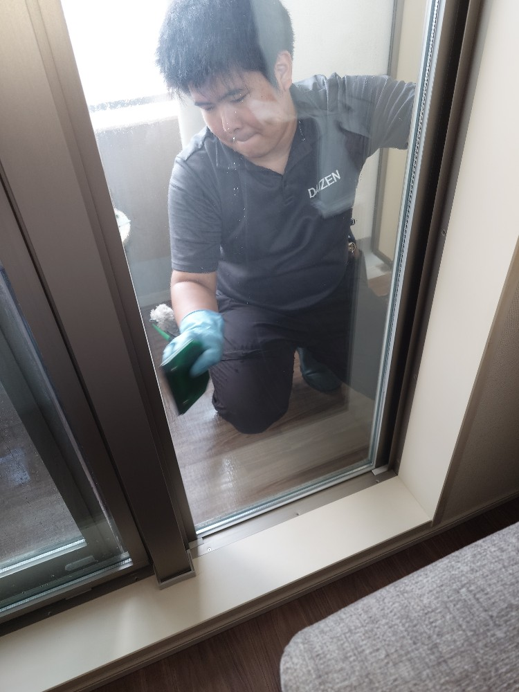
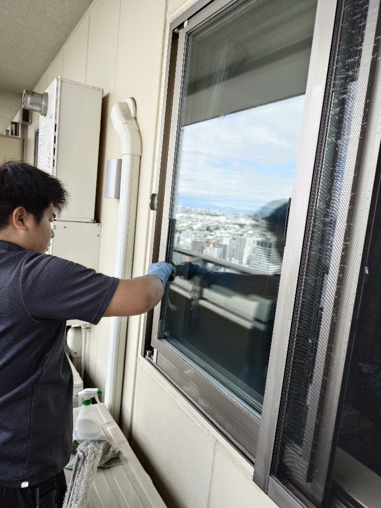
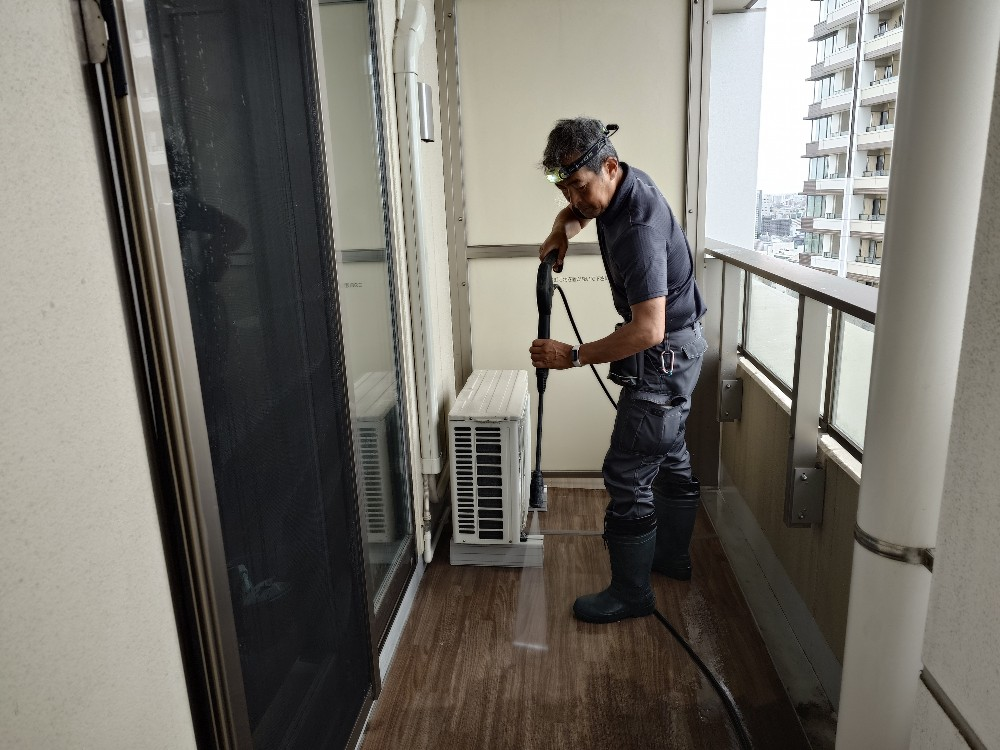
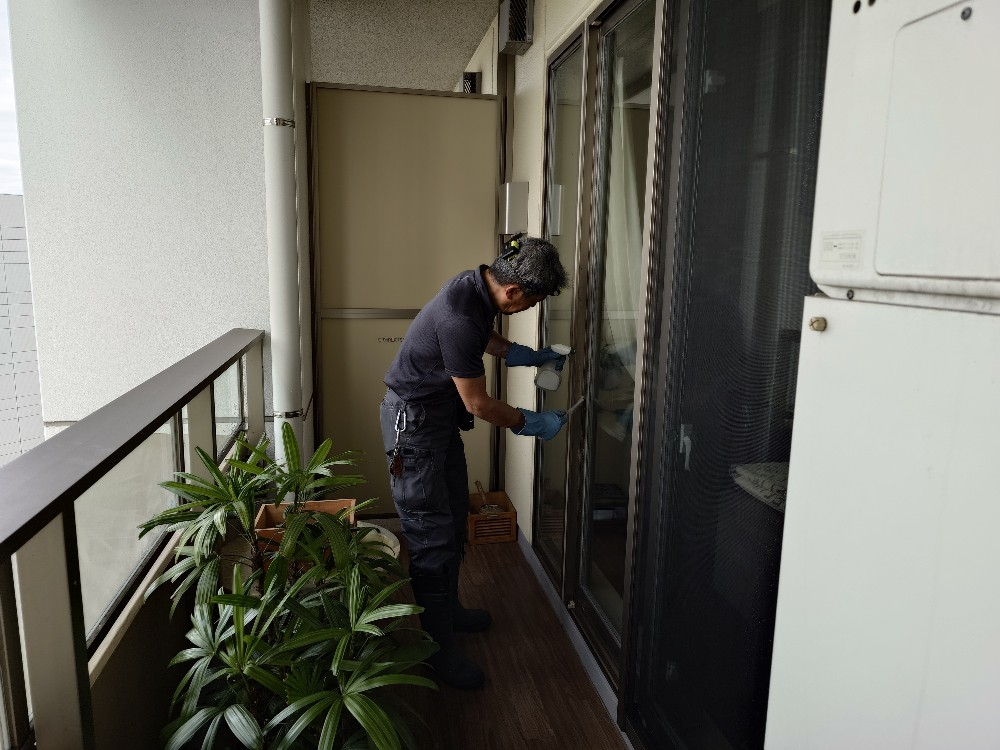
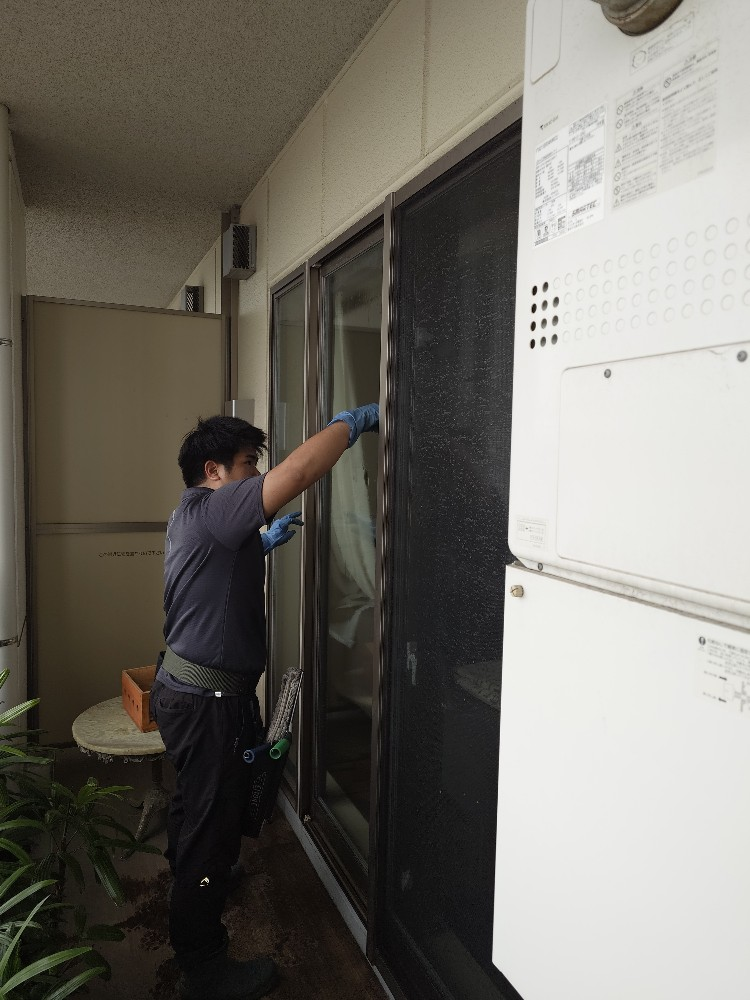
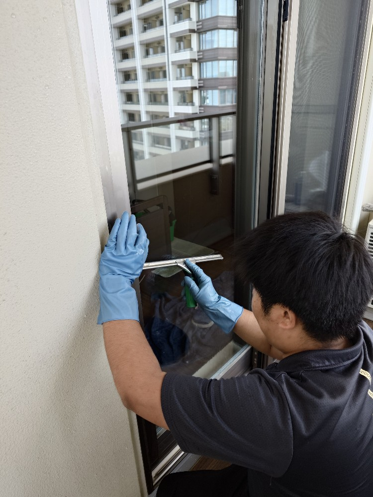
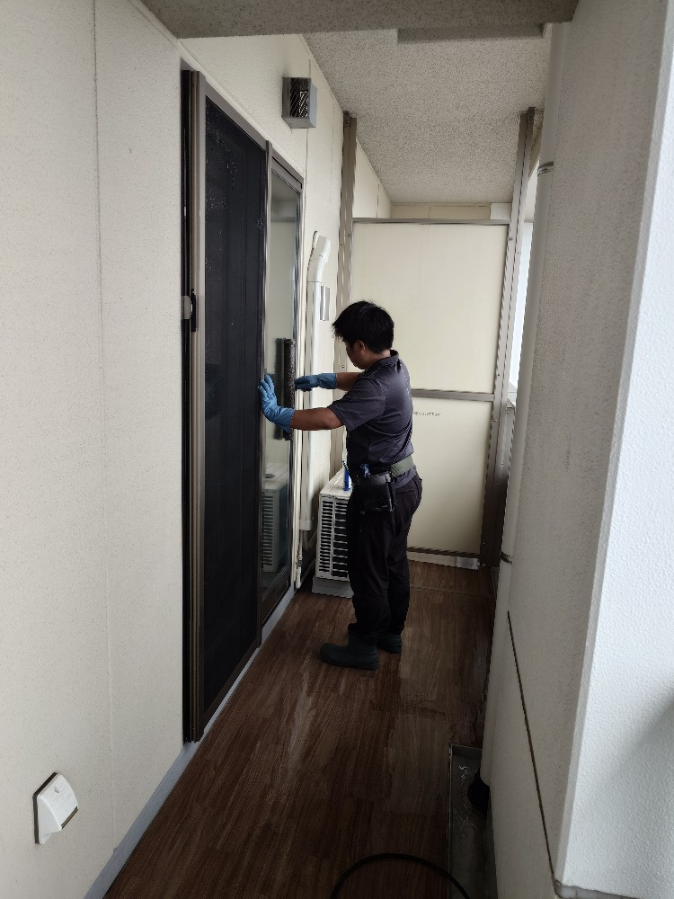

目黒駅前タワーマンションS様ご自宅の窓カビ取り、窓掃除クリーニング、サッシ洗浄クリーニング、網戸洗浄クリーニング・ベランダ高圧洗浄クリーニングをしました!

目黒駅前の高層タワーマンション、S様ご自宅の窓・サッシ・網戸・ベランダ洗浄クリーニングプロフェッショナルクリーニングを実施しました!S様マンションは新築からまだ年数が経っていらっしゃらないとても綺麗な高層マンション様ですが、高層階ゆえに、窓・サッシ・網戸の汚れが最近目立つ様になってきておりました、そこでDAIZENプロフェッショナルメソッドを用いて新築時の綺麗な窓・サッシ・網戸に復元しました!窓は汚れを専用薬剤で溶かし、刃物を用いて表面の堆積汚れをカットしていきます、このカットを丁寧に上手に成功出来るかどうかが窓プロフェッショナルクリーニングの核になります。ドイツ製専用スクイジーで窓の堆積汚れを切りますと、ピカピカでツルツルの綺麗な窓が甦りました!ベランダも同じく高層階なので、堆積汚れが溜まり始めておりましたので、隅々まで綺麗に高圧洗浄クリーニングで磨き上げました!





